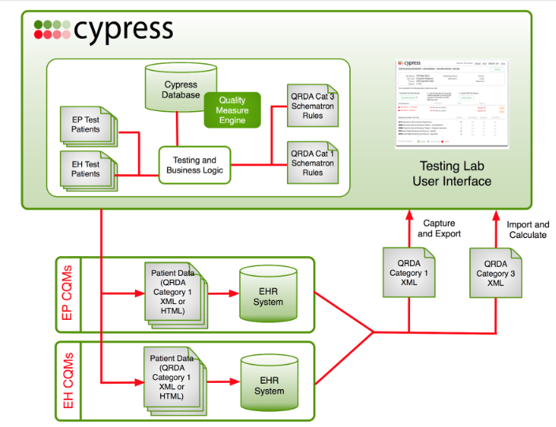

Cypress v2 is the rigorous and repeatable testing tool of Electronic Health Records (EHRs) and EHR modules in calculating Meaningful Use (MU) Stage 2 Clinical Quality Measures (CQMs). The Cypress tool is open source and freely available for use or adoption by the health IT community including EHR vendors and testing labs. Cypress v2 serves as the official testing tool for the 2014 EHR Certification program supported by the Office of the National Coordinator for Health IT (ONC).
The Cypress project is being stewarded by The MITRE Corporation and is being funded by the Office of the National Coordinator for Health Information Technology (ONC) within the United States Department of Health and Human Services (HHS). Cypress will go through the same ONC approval process as any other testing tool and should be viewed as a utility to aid in verifying the accuracy of Stage 1 Meaningful Use Clinical Quality Measure calculations.
The objective of Cypress is to enable repeatable and rigorous testing of an EHR's ability to accurately calculate Meaningful Use Stage 2 Eligible Provider (EP) and Eligible Hospital (EH) Clinical Quality Measures. Cypress has been submitted to ONC for approval as the official CQM testing tool for operational use in Meaningful Use Clinical Quality Measure certification. At this time, Cypress is not intended serve as a complete certification testing tool. Further instruction and guidance will be forthcoming from ONC once an approved full production version of Cypress is ready.
Cypress has been designed to support both the EHR vendor and ATL testing community. Cypress provides both of these types of organizations with a tool to verify the accurate calculation of Stage 1 Meaningful Use Clinical Quality Measures.
Cypress is a web-based application that automates the verification of the accuracy calculation Meaningful Use Stage 2 CQMs calculation, and the validity of the various data standards that are dependencies to CQMs. Cypress may be used in pre-testing mode by EHR vendors. Cypress is used in production mode by all Authorized Testing Labs (ATLs). Cypress test data is presented to EHRs for both the EP and EH tests via both interoperable XML standards, or via visual presentation for manual input of the patient-level clinical data.
Testing the accuracy of CQM calculation is provided via the Cypress EP and EH Patient Test Data. The Cypress EP and EH Test Data was designed to exercise the MU Stage 2 EP and EH CQMs. The Cypress Test Data is used to generate the scorecards that EHR vendors must meet. Vendors are able to inspect this test data prior to certification with an Authorized Testing Lab (ATL). Testing the validity of data standards is provided via the Cypress QRDA Category 1 Test Data. The Cypress Test Data includes synthetic patient records, designed to exercise all of the MU Stage 2 EP and EH CQMs. The Cypress Test Data is used by EHR vendors to generate QRDA Category 1 XML files for each of the EP or EH CQMs and the aggregate QRDA Category 3 XML files for "Import and Calculate" tests. Cypress will automatically validate and report on errors or warnings associated with these QRDA Category 1 and QRDA Category 3 XML files.
For EP CQM testing by ATLs, Cypress v2 will introduce a level of dynamic variability in the patient data at runtime to ensure that EHR systems are accurately supporting. For EH CQM testing by ATLs, Cypress v2 will only provide static testing of the patient-level data. Dynamic testing of EH CQMs will be addressed at a later release of Cypress after v2 has been finalized.
Cypress is a free open source tool that is readily available for EHR vendors to download and test their system's ability to accurately calculate Meaningful Use Clinical Quality Measures. Cypress has been designed to make this internal testing and validation process easier for EHR software vendors. It is unlikely that a vendor would want to integrate the Cypress testing software with their product.
No. Cypress is designed to test the data calculations that would be used in such a report. Cypress would ensure that the software used to produce the report is calculating theMeaningful Use Clinical Quality Measures correctly, but is not designed to export the report itself.
No. Cypress could be a supporting software tool to help test EHR systems and EHR modules for accurate calculation of Meaningful Use Clinical Quality Measures. Eligible health care professionals can qualify for incentive payments under the Meaningful Use program when they adopt certified EHR technology and use it to achieve specified objectives. One of those specified objectives that an eligible provider must meet is to report on Meaningful Use Clinical Quality Measures.
Cypress will export all entries in the patient record that belong to the relevant valuesets for the data criterion for the measure, regardless of date. This is because some measures require data that is outside of the designated Measure Period. As a result, no date filtering on the data is done when the patients are generated.
Why do the test patients have different naming conventions at certain times versus others? A: The test file names will differ depending on their use. Most important to know is that if you are creating a test in the Cypress software, a realistic patient name is randomly assigned to those records (e.g. Arlene Maxwell and Randall Vasquez). The name assigned to that record will differ each time a new test is created. However, any other time you view the patient files outside of the testing scenario, the patient records will take on a clinical naming convention (e.g. SCIP_Adult A, NEWBORN A and VTE_Adult C).
Open source software is a term used to describe software that is available in source code form and is generally free to use. The source code may be used to study and understand business logic coded into the software product and may also be included in derivative forms of the software product as allowed by the copyright holders.
Yes. Code contributions, bug fixes, and ideas for new features are all welcome for the Cypress project. A requirement for contributing software is that any and all software contributed to Cypress must be released under an Apache 2 open source distribution license, and that you transfer copyright of any code or patches you submit to the project.
To submit a new feature or bug fix for consideration into the Cypress repository, setup an account on GitHub, fork the Cypress code, and create a branch of Cypress on your repository. Send the link to the Cypress branch to the Cypress talk email list. In this email, cite either an existing bug or feature from the Cypress project tracker to specify the changes that you are contributing.
If you have suggestions on new features, or want to report a bug that has not yet been tracked, send an email to the talk email list with either the details for how to reproduce a bug, or a detailed description about a feature that you would like to see added to Cypress.
No. If you make changes to your copy of the Cypress code there is no guarantee that the changes will be accepted back to the Cypress project. This rigor is required to ensure the highest quality of the Cypress software. Any source code contributions are publicly reviewed and vetted by the Cypress project's governing organizations.
Any potential Cypress bug fix or Cypress feature contribution will be vetted by the Cypress project's governing bodies. Code contributions must have quality unit testing coverage that exceeds a 50% threshold, and must have reasonable and mature cyclomatic code complexity. There is a Ruby code convention requirement that can be found here. There is a Google's JavaScript style guide that can be found here. The Cypress code attempts to follow these guides as much as possible. Any contributions should follow these conventions.
The most prominent activities are always published on the project website. Whenever possible, please make use of our FAQ section before exploring other communication channels.
There are two email distribution lists which may also be used to request information about the project's plans and activities. These lists are:
Please note that communications to the Cypress talk list are publicly available to the broader community. Also, to ensure that you are included in responses to questions, please join the group or check the google groups website via the links above.
The Cypress software is provided via the open source Apache 2 distribution license. For questions regarding the licensing categories on the use of the clinical codes within the Cypress bundle that are available via the National Library of Medicine's (NLM's) Metathauraus, you need to contact the NLM. The Cypress project cannot provide either vendors or healthcare providers with guidance on these NLM licensing restrictions as they relate to the clinical codes.
For testing Clinical Quality Measures, Cypress can generate the HL7 Quality Reporting Document Architecture (QRDA) Category 1 XML to represent patient-level data that can be integrated into an EHR system that needs to calculate the results of either an Eligible Professional (EP) or Eligible Hospital (EH) Clinical Quality Measure. Cypress supports tests that use the HL7 Quality Reporting Document Architecture (QRDA) Category 3 XML standard for reporting the aggregate Clinical Quality Measure result output. Cypress also supports tests using the HL7 Quality Reporting Document Architecture (QRDA) Category 1 XML standard for testing the ability of systems to report individual patient-level data as system output for the purposes of calculating Clinical Quality Measure results.
Similar to Cypress, popHealth is another open source healthcare project being supported by the Office of the National Coordinator for Health Information Technology. Cypress shares some of the same foundational software architecture as popHealth. Cypress is designed to support the accurate testing of Meaningful Use Clinical Quality Measures. popHealth is an open source reference implementation for reporting on the results of Meaningful Use Clinical Quality Measures. popHealth can integrate directly with an Electronic Health Record system to support this, Cypress cannot. Cypress is designed to test EHR systems and EHR software modules such as popHealth.
Cypress runs on the Ruby on Rails open source web application framework. Cypress uses the MongoDB open source document database. Developing new software with Cypress, and/or adding new customized features will require non-trivial software development knowledge of both the Ruby and JavaScript programming languages.
The details for the versioning of the Cypress software and its sub-module dependancies are available via the Cypress developer wiki here.
The details for the changes to bug fixes as well as features introduced/removed in the various upgrades and new versions of the Cypress software are updated and posted here.
The Jira bug tracker for issues related to Cypress is available here.